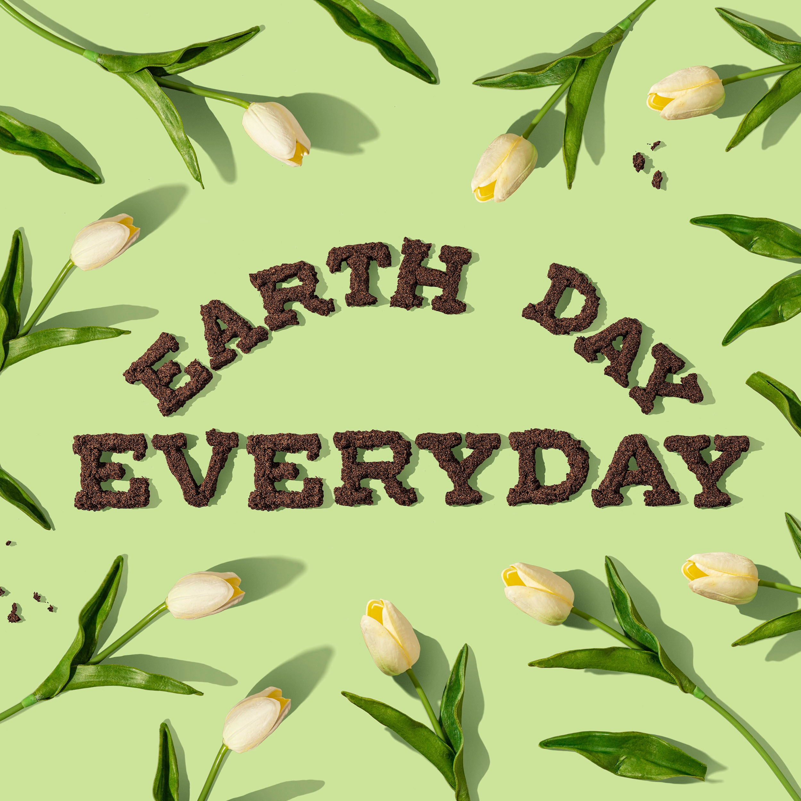

Giới thiệu về Ngày Trái đất
Ngày Trái đất là một ngày được ủng hộ toàn cầu nhằm tăng cường nhận thức và nâng cao nhận thức của mọi người về tình trạng môi trường và các vấn đề liên quan đến biến đổi khí hậu. Ngày này được tổ chức hàng năm vào ngày 22 tháng 4 và được hưởng ứng toàn cầu với các hoạt động như tắt đèn, giảm thiểu sử dụng năng lượng và phát triển các hoạt động bảo vệ môi trường.
Ngày Trái đất được bắt đầu từ năm 1970 bởi một nhóm những người quan tâm đến vấn đề môi trường. Từ đó đến nay, ngày này đã trở thành một sự kiện toàn cầu được hưởng ứng rộng rãi với nhiều hoạt động và chương trình khác nhau.

Chúng ta có thể thực hiện nhiều hành động nhỏ trong cuộc sống hàng ngày để góp phần bảo vệ môi trường. Hãy tắt đèn khi không sử dụng, giảm thiểu sử dụng túi nilon, sử dụng phương tiện giao thông công cộng, tắt máy tính khi không sử dụng, và nhiều hành động khác nữa.